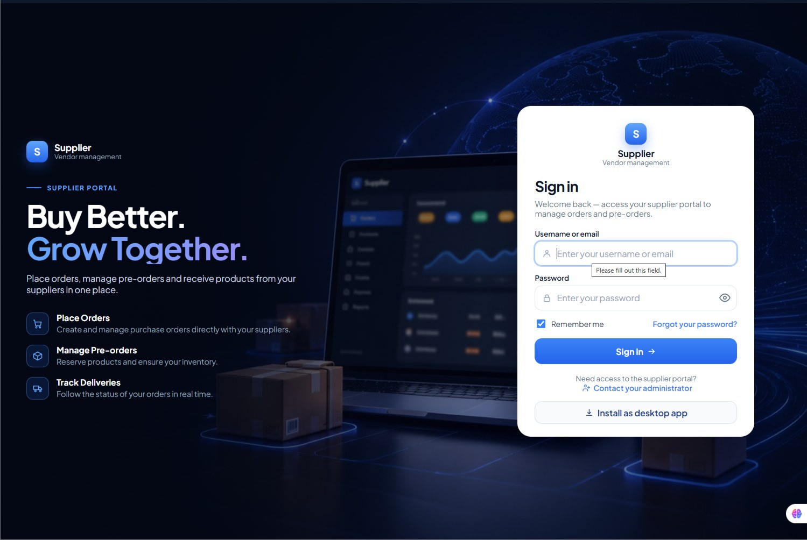
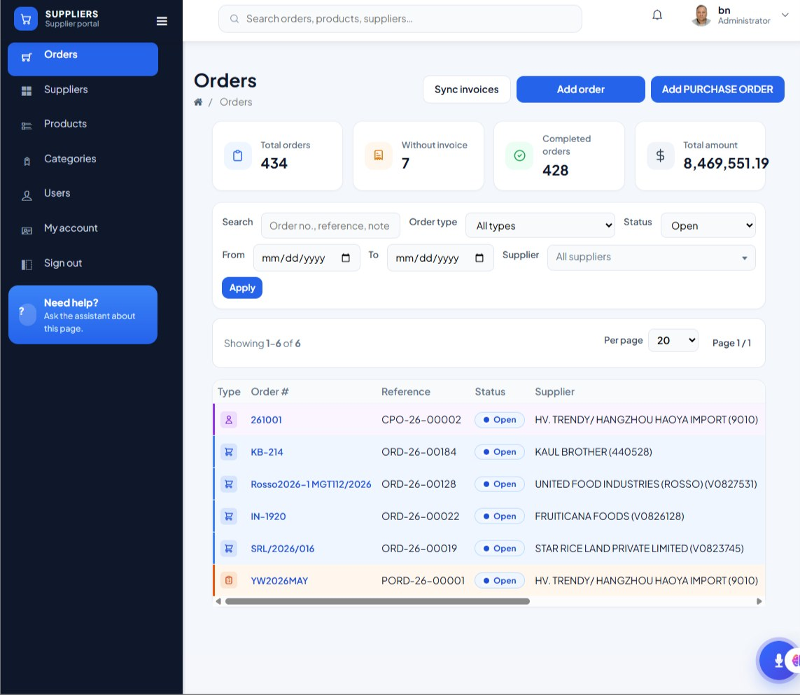
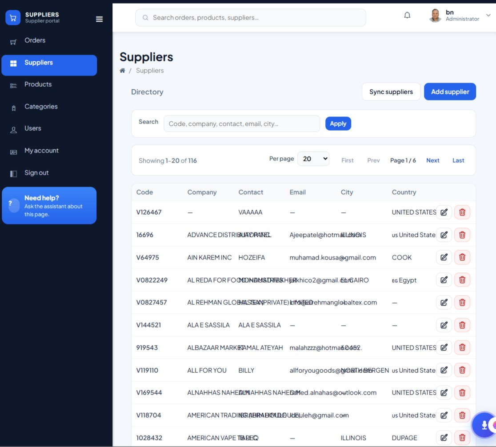
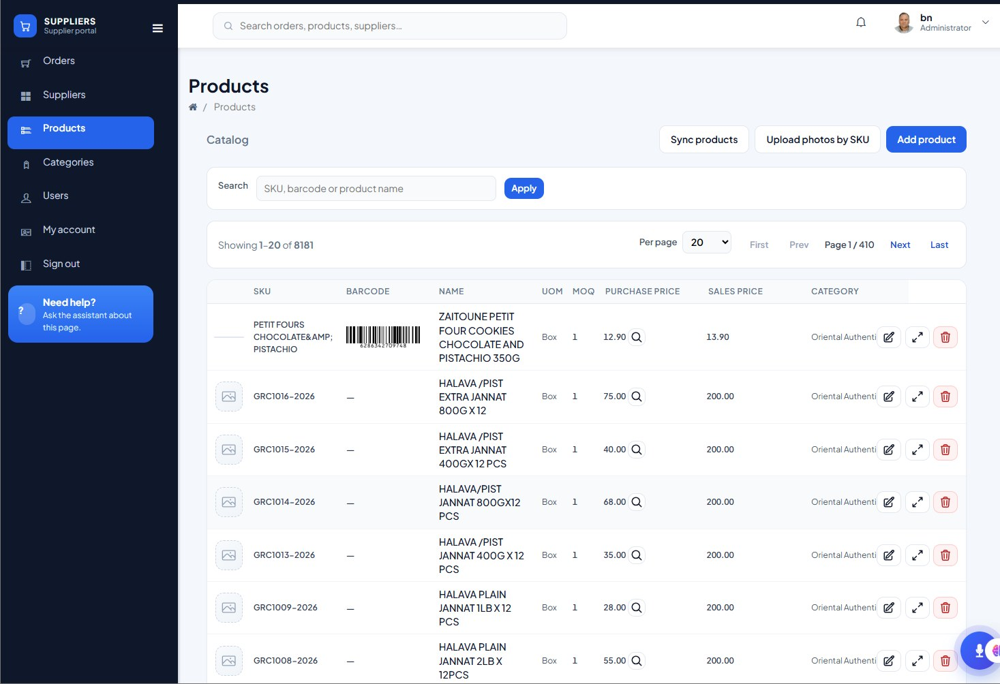
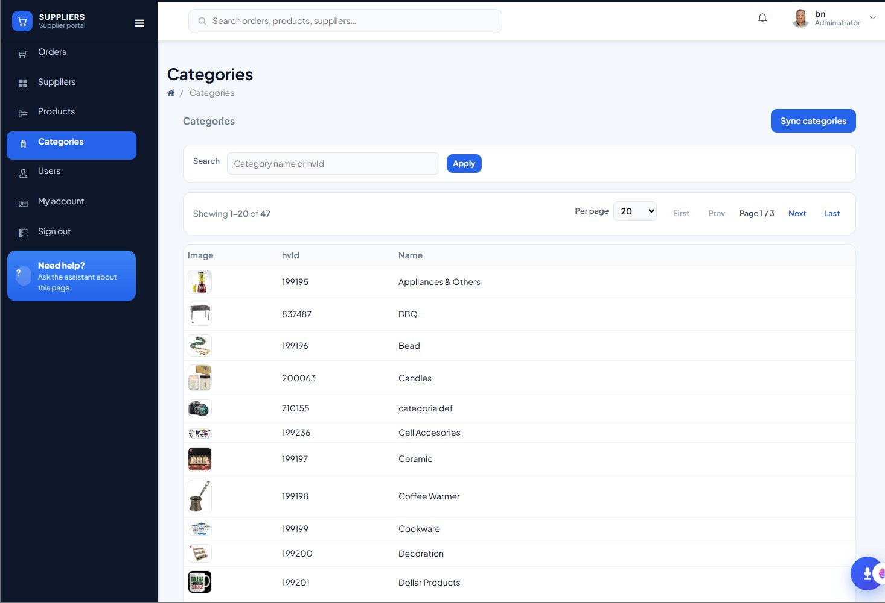
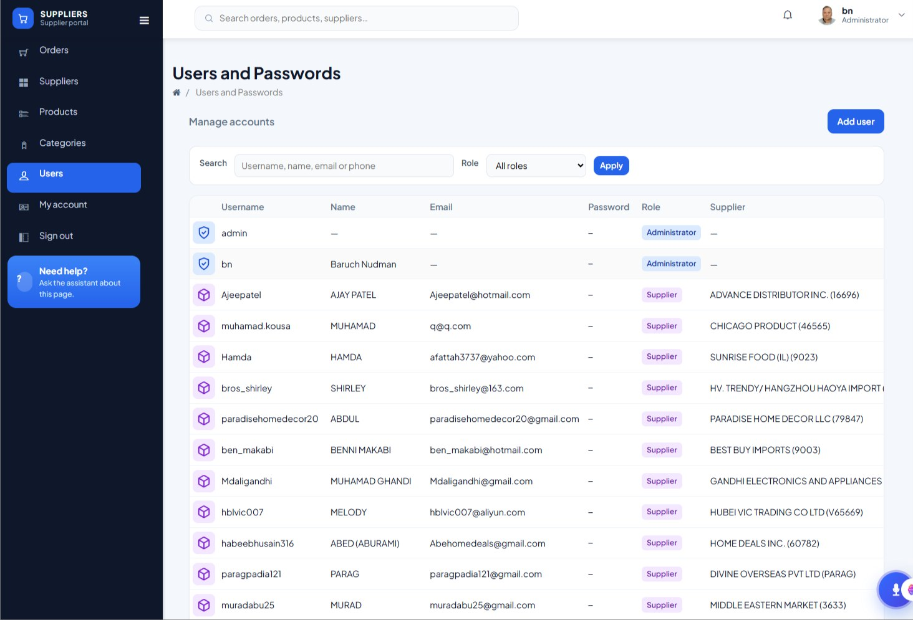
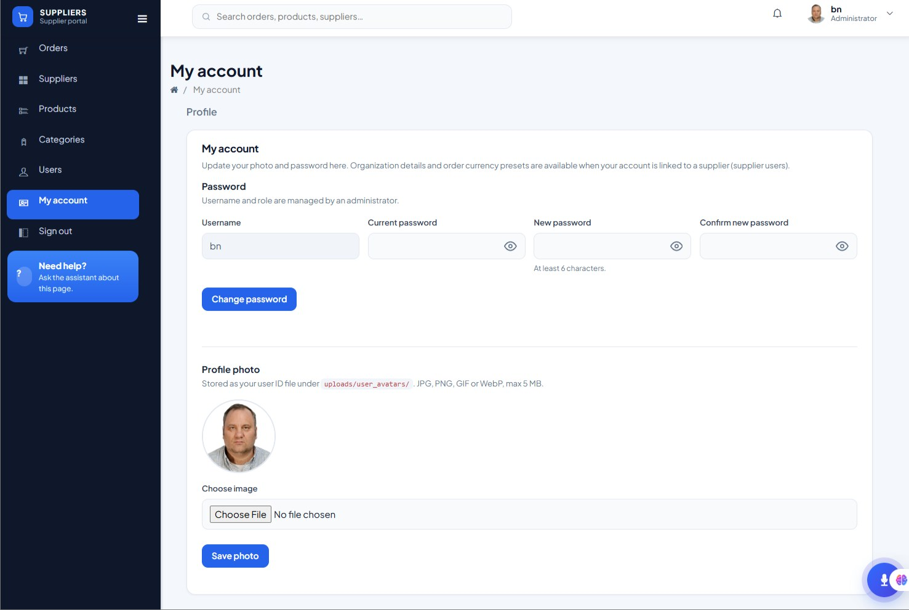

Compra mejor.
Crece en equipo.
El portal de proveedores de FullVendor conecta tu empresa con sus proveedores en un entorno centralizado. Gestiona órdenes de compra, consulta productos y organiza la información de tu red de suministro desde un solo lugar.

Herramientas para gestionar tu red de suministro
Desde la creación de órdenes hasta el mantenimiento del catálogo y los accesos, el Supplier Portal reúne las tareas principales de tu operación en una interfaz clara y sencilla.
Orders
Control de órdenes de compra
Consulta y administra órdenes de compra y pedidos asociados a tus proveedores. Revisa referencias, tipo de orden, estado, proveedor, fechas e importes desde una vista central. Los indicadores superiores ayudan a identificar el volumen de órdenes, las que aún no tienen factura y las completadas.
- ✓Resumen de órdenes e importes
- ✓Filtros por fecha, tipo, estado y proveedor
- ✓Sincronización de facturas y creación de órdenes
- ✓Seguimiento de órdenes abiertas y completadas

Suppliers
Directorio centralizado de proveedores
Mantén organizada la información de las empresas proveedoras. El directorio permite localizar registros por código, compañía, contacto, correo o ciudad, y revisar los datos principales de cada proveedor para facilitar la coordinación comercial.
- ✓Búsqueda por empresa y datos de contacto
- ✓Listado paginado de proveedores
- ✓Sincronización y registro de proveedores
- ✓Consulta de ciudad y país

Products
Administración del catálogo de productos
Consulta el catálogo de artículos vinculados a tus proveedores. La vista reúne SKU, código de barras, nombre, unidad de medida, cantidad mínima de pedido, precios y categoría. También incluye herramientas para sincronizar productos, cargar fotografías por SKU y registrar nuevos artículos.
- ✓Búsqueda por SKU, código de barras o nombre
- ✓Consulta de MOQ y precios
- ✓Carga de fotografías por SKU
- ✓Organización por categorías

Categories
Clasificación clara de productos
Organiza el catálogo mediante categorías y códigos de identificación. La pantalla permite buscar por nombre o identificador, consultar el listado y sincronizar las categorías para mantener una estructura consistente en el catálogo.
- ✓Listado de categorías con imagen
- ✓Búsqueda por nombre o código
- ✓Paginación de resultados
- ✓Sincronización de categorías

Users
Gestión de cuentas y roles
Administra las cuentas que acceden al portal. Consulta nombre de usuario, nombre, correo, rol y proveedor asociado. Los filtros facilitan localizar usuarios y revisar la distribución de accesos entre administradores y usuarios de proveedores.
- ✓Búsqueda por usuario, nombre, correo o teléfono
- ✓Filtro por rol
- ✓Identificación de administradores y proveedores
- ✓Alta de nuevos usuarios

My account
Perfil y seguridad personal
Cada usuario puede mantener su perfil actualizado, cambiar su contraseña y administrar su fotografía de cuenta. La pantalla reúne los campos de contraseña actual, nueva y confirmación, además de la carga de imagen de perfil.
- ✓Actualización de contraseña
- ✓Cambio de fotografía de perfil
- ✓Información de usuario y rol
- ✓Controles básicos de seguridad

Todo tu ecosistema de proveedores, bajo control.
Una experiencia unificada para dar seguimiento a las órdenes, mantener actualizado el catálogo y administrar los accesos de tu equipo.
Visibilidad operativa
Indicadores y estados para comprender rápidamente el movimiento de las órdenes.
Información centralizada
Proveedores, productos y categorías organizados en un mismo portal.
Accesos administrados
Cuentas y roles identificados para mantener orden en el acceso al sistema.
Conecta tus compras con tus proveedores.
Centraliza la gestión de órdenes, proveedores y productos con una plataforma diseñada para simplificar el trabajo diario.
Conocer FullVendor ↗